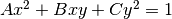

salientregions package¶
Submodules¶
salientregions.binarization module¶
-
class
salientregions.binarization.Binarizer¶ Bases:
objectAbstract class for objects that can binarize an image.
-
binarize(img, visualize=True)¶ Subclasses should implement this method.
-
-
class
salientregions.binarization.DatadrivenBinarizer(lam, area_factor_large=0.001, area_factor_verylarge=0.1, weights=(0.33, 0.33, 0.33), offset=80, num_levels=256, connectivity=4)¶ Bases:
salientregions.binarization.BinarizerBinarizes the image such that the desired number of (large) connected components is maximized.
Parameters: - lam (float) – lambda, minimumm area of a connected component
- area_factor_large (float, optional) – factor that describes the minimum area of a large CC
- area_factor_verylarge (float, optional) – factor that describes the minimum area of a very large CC
- weights ((float, float, float)) – weights for number of CC, number of large CC and number of very large CC respectively.
- offset (int, optional) – The offset (number of gray levels) to search for around the Otsu level
- num_levels (int, optional) – number of gray levels to be considered [1..255], the default number 256 gives a stepsize of 1.
- connectivity (int, optional) – What connectivity to use to define CCs
-
binarize(img, visualize=True)¶ Binarizes the image such that the desired number of (large) connected components is maximized.
Parameters: - img (numpy array) – grayscale image to be binarized.
- visualize (bool, optional) – Option for visualizing the process
Returns: binarized – Binary image with values 0 and 255
Return type: numpy array
-
binarize_withthreshold(img, visualize=True)¶ Binarizes the image such that the desired number of (large) connected components is maximized. Also returns the optimal threshold.
Parameters: - img (numpy array) – grayscale image to be binarized.
- visualize (bool, optional) – Option for visualizing the process
Returns: - t_opt (int) – Optimal threshold
- binarized (numpy array) – Binary image with values 0 and 255
-
class
salientregions.binarization.OtsuBinarizer¶ Bases:
salientregions.binarization.BinarizerBinarizes the image with the Otsu method.
-
binarize(img, visualize=True)¶ Binarizes the image with the Otsu method.
Parameters: - img (numpy array) – grayscale image to be binarized.
- visualize (bool, optional) – Option for visualizing the process
Returns: binarized – Binary image with values 0 and 255
Return type: numpy array
-
-
class
salientregions.binarization.ThresholdBinarizer(threshold=127)¶ Bases:
salientregions.binarization.BinarizerBinarizes the image with a given threshold.
Parameters: threshold (int, optional) – Threshold value -
binarize(img, visualize=True)¶ Binarizes the image according to the threshold.
Parameters: - img (numpy array) – grayscale image to be binarized.
- visualize (bool, optional) – Option for visualizing the process
Returns: binarized – Binary image with values 0 and 255
Return type: numpy array
-
salientregions.binarydetector module¶
-
class
salientregions.binarydetector.BinaryDetector(SE, lam, area_factor, connectivity)¶ Bases:
objectClass for detecting salient regions in binary images.
Parameters: - SE (numpy array) – The structuring element to use in processing the image
- lam (float) – lambda, minimumm area of a connected component
- area_factor (float) – factor that describes the minimum area of a significent CC
- connectivity (int) – What connectivity to use to define CCs
-
holes¶ numpy array
binary mask of the holes
-
islands¶ numpy array
binary mask of the islands
-
indentations¶ numpy array
binary mask of the indentations
-
protrusions¶ numpy array
binary mask of the protrusions
Note
The methods detect, get_holes, get_islands, get_indentations and get_protrusions invoke the calculation of the regions. After that, the regions are also available as attributes holes, islands, indentations and protrusions.
-
detect(img, find_holes=True, find_islands=True, find_indentations=True, find_protrusions=True, visualize=True)¶ Find salient regions of the types specified.
Parameters: - img (numpy array) – binary image to detect regions
- find_holes (bool, optional) – Whether to detect regions of type hole
- find_islands (bool, optional) – Whether to detect regions of type island
- find_indentations (bool, optional) – Whether to detect regions of type indentation
- find_protrusions (bool, optional) – Whether to detect regions of type protrusion
- visualize (bool, optional) – option for visualizing the process
Returns: regions – For each type of region, the maks with detected regions.
Return type: dict
-
detect_holelike(img, filled)¶ Detect hole-like salient regions, using the image and its filled version
Parameters: - img (2-dimensional numpy array with values 0/255) – Image to detect holes
- filled (2-dimensional numpy array with values 0/255, optional) – Precomputed filled image
Returns: holes – Mask with all holes as foreground.
Return type: 2-dimensional numpy array with values 0/255
-
detect_protrusionlike(img, filled, holes)¶ Detect ‘protrusion’-like salient regions
Parameters: - img (2-dimensional numpy array with values 0/255) – image to detect holes
- filled (2-dimensional numpy array with values 0/255, optional) – precomputed filled image
- holes (2-dimensional numpy array with values 0/255) – The earlier detected holes
Returns: protrusions – Image with all protrusions as foreground.
Return type: 2-dimensional numpy array with values 0/255
-
static
fill_image(img)¶ Fills all holes in connected components in a binary image.
Parameters: img (numpy array) – binary image to fill Returns: filled – The filled image Return type: numpy array
-
get_holes()¶ Get salient regions of type ‘hole’
-
get_indentations()¶ Get salient regions of type ‘indentation’
-
get_islands()¶ Get salient regions of type ‘island’
-
get_protrusions()¶ Get salient regions of type ‘protrusion’
-
remove_small_elements(elements, connectivity=None, remove_border_elements=True, visualize=False)¶ Remove elements (Connected Components) that are smaller then a given threshold
Parameters: - elements (numpy array) – binary image with elements
- connectivity (int, optional) – What connectivity to use to define CCs
- remove_border_elements (bool, optional) – Also remove elements that are attached to the border
- visualize (bool, optional) – option for visualizing the process
Returns: result – Binary image with all elements larger then lam
Return type: numpy array
-
reset()¶ Reset all attributes.
salientregions.detectors module¶
-
class
salientregions.detectors.Detector(SE_size_factor=0.15, lam_factor=5, area_factor=0.05, connectivity=4)¶ Bases:
objectAbstract class for salient region detectors.
Parameters: - SE_size_factor (float, optional) – The fraction of the image size that the structuring element should be
- lam_factor (float, optional) – The factor of lambda compared to the SE size
- area_factor (float, optional) – factor that describes the minimum area of a significent CC
- connectivity (int) – What connectivity to use to define CCs
-
detect(img)¶ This method should be implemented to return a dictionary with the salientregions. Calling this function from the superclass makes sure the structuring element and lamda are created.
Parameters: img (numpy arrary) – grayscale or color image to detect regions
-
get_SE(imgsize)¶ Get the structuring element en minimum salient region area for this image. The standard type of binarization is Datadriven (as in DMSR), but it is possible to pass a different Binarizer.
Parameters: imgsize (int) – size (nr of pixels) of the image Returns: - SE (numpy array) – The structuring element for this image
- lam (float) – lambda, minimumm area of a salient region
-
class
salientregions.detectors.MSSRDetector(min_thres=0, max_thres=255, step=1, perc=0.7, **kwargs)¶ Bases:
salientregions.detectors.DetectorFind salient regions of all four types, in color or greyscale images. It uses MSSR, meaning that it detects on a series of threshold levels.
Parameters: - min_thres (int, optional) – Minimum threshold level
- max_thres (int, optional) – Maximum threshold level
- step (int, optional) – Stepsize for looping through threshold levels
- perc (float, optional) – The percentile at which the threshold is taken
- **kwargs –
Other arguments to pass along to the constructor of the superclass Detector
-
gray¶ numpy array
The image converted to grayscale
-
regions_sum¶ numpy array
The sum of the regions of all levels, before thresholding
-
detect(img, find_holes=True, find_islands=True, find_indentations=True, find_protrusions=True, visualize=True)¶ Find salient regions of the types specified.
Parameters: - img (numpy arrary) – grayscale or color image to detect regions
- find_holes (bool, optional) – Whether to detect regions of type hole
- find_islands (bool, optional) – Whether to detect regions of type island
- find_indentations (bool, optional) – Whether to detect regions of type indentation
- find_protrusions (bool, optional) – Whether to detect regions of type protrusion
- visualize (bool, optional) – Option for visualizing the process
Returns: regions – For each type of region, the maks with detected regions.
Return type: dict
-
threshold_cumsum(data)¶ Thresholds an image based on a percentile of the non-zero pixel values.
Parameters: data (2-dimensional numpy array) – the image to threshold Returns: binarized – Thresholded image Return type: numpy array
-
class
salientregions.detectors.SalientDetector(binarizer=None, **kwargs)¶ Bases:
salientregions.detectors.DetectorFind salient regions of all four types, in color or greyscale images. The image is first binarized using the specified binarizer, then a binary detector is used.
Parameters: - binarizer (Binerizer object, optional) – Binerizer object that handles the binarization. By default, we use datadriven binarization
- **kwargs –
Other arguments to pass along to the constructor of the superclass Detector
-
gray¶ numpy array
The image converted to grayscale
-
binarized¶ numpy array
The binarized image
-
detect(img, find_holes=True, find_islands=True, find_indentations=True, find_protrusions=True, visualize=True)¶ Find salient regions of the types specified.
Parameters: - img (numpy arrary) – grayscale or color image to detect regions
- find_holes (bool, optional) – Whether to detect regions of type hole
- find_islands (bool, optional) – Whether to detect regions of type island
- find_indentations (bool, optional) – Whether to detect regions of type indentation
- find_protrusions (bool, optional) – Whether to detect regions of type protrusion
- visualize (bool, optional) – Option for visualizing the process
Returns: regions – For each type of region, the maks with detected regions.
Return type: dict
salientregions.helpers module¶
-
salientregions.helpers.array_diff(arr1, arr2, rtol=1e-05, atol=1e-08)¶ Compares two arrays. Useful for testing purposes.
Parameters: - arr1 (2-dimensional numpy, first array to compare) –
- arr2 (2-dimensional numpy, second array to compare) –
Returns: is_close – True if elemetns of the two arrays are close within the defaults tolerance (see numpy.allclose documentaiton for tolerance values)
Return type: bool
-
salientregions.helpers.binary_mask2ellipse_features(regions, connectivity=4)¶ Conversion of multiple types of regions to ellipse features.
Parameters: - regions (dict) – Dict of binary masks of the detected salient regions
- connectivity (int) – Neighborhood connectivity
Returns: - num_regions (dict) – The number of saleint regions for each saliency_type
- features (dict) – array with ellipse features for each of the ellipses, for each saliency type
Note
Every row in the resulting feature array corresponds to a single region/ellipse and is of format:
x0 y0 A B C saliency_type, where(x0,y0)are the coordinates of the ellipse centroid andA,BandCare the polynomial coefficients from the ellipse equation .
-
salientregions.helpers.binary_mask2ellipse_features_single(binary_mask, connectivity=4, saliency_type=1)¶ Conversion of a single type of binary regions to ellipse features.
Parameters: - binary_mask (2-D numpy array) – Binary mask of the detected salient regions of the given saliency type
- connectivity (int) – Neighborhood connectivity
- saliency_type (int) – Type of salient regions. The code is: 1: holes 2: islands 3: indentations 4: protrusions
Returns: - num_regions (int) – The number of saleint regions of saliency_type
- features (numpy array) – array with ellipse features for each of the ellipses
Note
Every row in the resulting feature array corresponds to a single region/ellipse and is of format:
x0 y0 A B C saliency_type, where(x0,y0)are the coordinates of the ellipse centroid andA,BandCare the polynomial coefficients from the ellipse equation .
-
salientregions.helpers.image_diff(img1, img2, visualize=True)¶ Compares two images and shows the difference. Useful for testing purposes.
Parameters: - img1 (numpy array) – first image to compare
- img2 (numpy array) – second image to compare
- visualize (bool, optional) – option for visualizing the process
Returns: is_same – True if all pixels of the two images are equal
Return type: bool
-
salientregions.helpers.read_matfile(filename, visualize=True)¶ Read a matfile with the binary masks for the salient regions. Returns the masks with 0/255 values for the 4 salient types
Parameters: - filename (str) – Path to the mat file
- visualize (bool, optional) – option for visualizing the process
Returns: - holes (numpy array) – Binary image with holes as foreground
- islands (numpy array) – Binary image with islands as foreground
- protrusions (numpy array) – Binary image with protrusions as foreground
- indentations (numpy array) – Binary image with indentations as foreground
-
salientregions.helpers.region2ellipse(half_major_axis, half_minor_axis, theta)¶ Conversion of elliptic parameters to polynomial coefficients.
Parameters: - half_major_axis (float) – Half of the length of the ellipse’s major axis
- half_minor_axis (float) – Half of the length of the ellipse’s minor axis
- theta (float) – The ellipse orientation angle (radians) between the major and the x axis
Returns: A, B, C – The coefficients of the polynomial equation of an ellipse
Return type: floats
-
salientregions.helpers.show_image(img, window_name='image')¶ Display the image. When a key is pressed, the window is closed
Parameters: - img (numpy array) – image
- window_name (str, optional) – name of the window
-
salientregions.helpers.visualize_elements(img, regions=None, holes=None, islands=None, indentations=None, protrusions=None, visualize=True, display_name='salient regions')¶ Display the image with the salient regions provided.
Parameters: - img (numpy array) – image
- regions (dict) – dictionary with the regions to show
- holes (numpy array) – Binary mask of the holes, to display in blue
- islands (numpy array) – Binary mask of the islands, to display in yellow
- indentations (numpy array) – Binary mask of the indentations, to display in green
- protrusions (numpy array) – Binary mask of the protrusions, to display in red
- visualize (bool, optional) – visualizations flag
- display_name (str, optional) – name of the window
Returns: img_to_show – image with the colored regions
Return type: numpy array